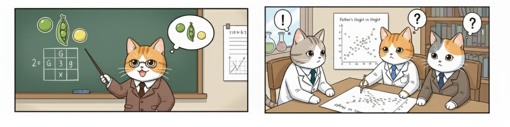
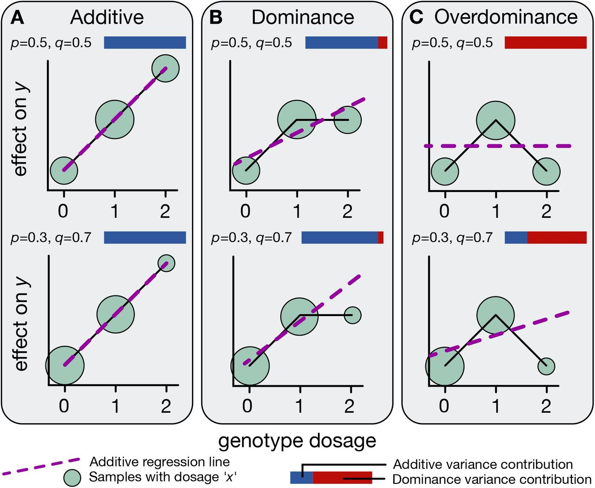
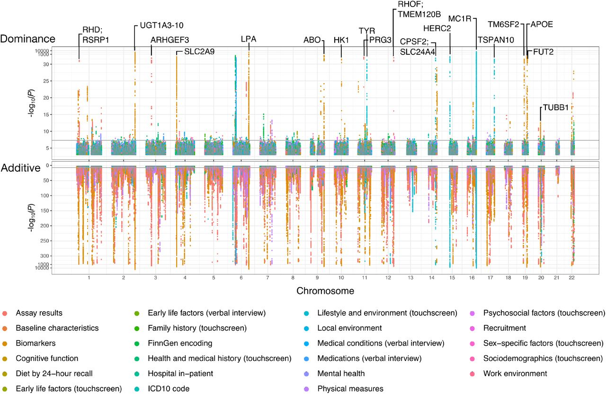

BSMS205 · Genetics
Polygenic Model
Chapter 15 · Part III · Complex Traits
Welcome to Chapter fifteen of BSMS two oh five Genetics. Last chapter we saw how individual alleles can add up — each one nudging a trait by a tiny amount. Today we zoom out and ask the big question: what happens when thousands of those tiny nudges combine? The answer turns Mendel's discrete categories into the smooth bell curves we actually measure for height, weight, blood pressure, and disease risk. We will use the largest study of human traits ever done — the U K Biobank with three hundred sixty thousand people — to see why most traits are polygenic, why dominance is rare, and how we measure each kind of effect.
A question to start with
If alleles add up ,
Hold this question in your head for the rest of the lecture. Last chapter we treated additive alleles one at a time — the B allele adds half a centimeter, simple. But your height is not the result of one variant. It is the result of thousands. So what shape does a sum of thousands of tiny independent nudges actually take? The answer, which we will derive today, is a bell curve. And once you see why, you understand why almost every human trait we measure looks Gaussian.
Mendel's peas vs your height

Figure. Mendel's peas: two discrete categories (tall / short). Human height: a smooth continuum from short to tall. Same biology — but very different number of contributing genes.
Look at the contrast. On the left, Mendel's pea plants — tall or short, two discrete bins, no in-between. On the right, human height in a real population — a smooth continuum where almost no two adults are exactly the same. Both are inherited. Both follow the same molecular rules. So why do they look so different? The difference is the number of genes involved. Mendel happened to study traits controlled by a single gene with two alleles. Human height is controlled by thousands. Once you understand that one fact, the bell curve falls out automatically.
The reconciliation
Mendel · 1866
Discrete · 3:1 ratios
One gene , two allelesPeas, flowers, mice
Galton · 1889
Continuous · bell curves
Height, intelligence
Looked non -Mendelian
Fisher 1918 · Mendel + many genes = Galton.
For decades after eighteen sixty-six, Mendel's peas and Galton's bell curves looked like two incompatible kinds of inheritance. Mendelians fought biometricians. Then in nineteen eighteen Ronald Fisher wrote a paper showing they were the same thing. If you take Mendel's law of segregation and apply it to many genes simultaneously, the discrete categories blur into a smooth continuum. The bell curve is what Mendelian inheritance looks like when you stop tracking one gene and start summing thousands. That insight is the foundation of modern quantitative genetics.
The scale of the question
361,194
people · 1,060 traits · 13.7 M variants
The UK Biobank · largest genetic resource on earth
Physical · biomarkers · diseases · behaviors
Tested both additive and dominance effects
How do we actually know most traits are polygenic? Not by reasoning, but by measurement at unprecedented scale. The U K Biobank holds genetic and health data for over half a million British adults. The Palmer twenty twenty-one study analyzed three hundred sixty-one thousand of them across more than a thousand traits — height, B M I, cholesterol, disease risk, behavioral measures. They tested almost fourteen million genetic variants. That is enough statistical power to detect the architecture of trait variation directly. We will spend most of today walking through what they found.
Roadmap for today
Why Mendel's ratios disappear in real traits
The polygenic intuition · summing many small effects
Simulation · 1, 5, 50, 1000 loci
Measuring additive effects · the 0-1-2 code
Measuring dominance · the orthogonal trick
UK Biobank results · what is real, what is rare
Polygenic scores & the omnigenic preview
Here is the path for the next sixty minutes. First we revisit why simple Mendelian ratios vanish for traits like height. Second we build the polygenic intuition — what does adding many small effects actually do mathematically. Third we run a simulation in our heads, one locus, five loci, fifty, a thousand — and watch the bell curve emerge. Fourth we walk through how additive effects are measured. Fifth, the harder part — how to separate dominance from additivity using orthogonal encoding. Sixth, we look at the U K Biobank's actual numbers. And seventh, we preview polygenic scores and the omnigenic model that connects to chapter sixteen.
§ 1
Why Most Traits
Let's start with a puzzle. Mendel's laws are unbreakable — they apply to every gene in your body. So why don't we see clean three-to-one ratios when we measure things like height or blood pressure? The answer is not that Mendel was wrong. The answer is that real traits are sums of many Mendelian genes acting at once.
One gene, three genotypes, three values
AA → 170 cm · baselineAB → 170.5 cm · one B alleleBB → 171 cm · two B alleles
Each B allele adds 0.5 cm .
Recall how additive alleles work from last chapter. Take a single variant with alleles A and B. You inherit one copy from each parent — so you can be A A, A B, or B B. With purely additive effects, each B allele adds the same amount. A A is your baseline at one seventy. A B is one seventy and a half. B B is one seventy-one. The pattern is zero, one-half, one — perfectly linear in the count of B alleles. The mental image is stacking blocks of equal height.
One gene · the histogram
If allele B has frequency p = 0.5 , genotypes follow 1 : 2 : 1
The trait histogram has 3 bars
That is what Mendel saw in peas
With one gene , the trait distribution looks discrete.
Now imagine sampling a thousand people for a trait controlled by just this one gene. If the B allele has frequency one half, Hardy-Weinberg tells you twenty-five percent will be A A, fifty percent A B, twenty-five percent B B. So your histogram has just three bars at three trait values. That is exactly what Mendel saw with pea plants — a small number of discrete categories. If real human height were controlled by one gene, we would see three or four height bars and we would all be one of a few sizes. Clearly that is not the world we live in.
The leap
What if the trait depends ontwo genes? Five? Fifty?
Here is the leap. Real traits are not controlled by one gene. So let's ask the obvious question — what happens to that three-bar histogram when we add a second gene? Then a fifth? A fiftieth? A thousandth? The shape of the answer is what makes quantitative genetics work. And it is the cleanest example of an emergent statistical property in all of biology.
§ 2
From Many Small Effects
We are now going to build, step by step, the intuition for why summing many independent Mendelian genes produces a Gaussian distribution. This is the heart of the polygenic model. Once you see why, every quantitative-trait result you read in the rest of your career will make immediate sense.
Two loci · 9 genotype combinations
Locus 1: AA, AB, BB · adds 0, 0.5, 1 cm
Locus 2: CC, CD, DD · adds 0, 0.5, 1 cm
3 × 3 = 9 joint genotypesTrait values cluster into 5 bins : 0, 0.5, 1, 1.5, 2 cm
Already a peak in the middle .
Add just one more gene. Now we have nine joint genotype combinations — but several of them give the same trait value. A A C D and A B C C both give half a centimeter of extra height. So nine combinations collapse into five distinct trait bins. And crucially, the middle bins have more genotype combinations supporting them than the extreme bins. Already with two loci you see a peak in the middle and tails on the sides. The bell curve is starting to emerge from pure combinatorics.
Five loci · the shape begins
5 loci, each with 0/1/2 effect alleles
Possible totals: 0 to 10 effect alleles
Number of ways to make each total → binomial
Histogram already peaks in the middle
Most people are average-ish .
Push it to five loci. Now your effect-allele count can be anywhere from zero to ten. The number of ways to land on a total of five is the binomial coefficient ten-choose-five — much bigger than the number of ways to land on zero or ten. Most people end up near the middle of the count distribution because that is where most of the combinatorial mass lives. The histogram is starting to look like a bell. The biology is unchanged — every gene still follows Mendel — but the distribution we observe at the population level is now smooth.
Why the bell curve · central limit
Trait = effect₁ + effect₂ + effect₃ + ... + effectN
Each term is a small random contribution
Central limit theorem : sum of many independent variables → Gaussian The shape is independent of what each gene does individually
Here is the math behind the intuition. The trait is the sum of many small genetic contributions plus environmental noise. Each contribution is essentially a random variable — random because of which alleles you happened to inherit. The central limit theorem, one of the most important results in all of statistics, says that whenever you add up many independent random contributions of similar size, the total distribution converges to a Gaussian — a bell curve. The shape is universal. It does not matter what each gene specifically does. As long as the effects are many, small, and independent, the sum is Gaussian.
1 → 5 → 50 → ∞ loci
Loci Distinct trait values Shape
1 3 Three bars 2 5 Slight peak 5 11 Visible bell 50 101 Smooth Gaussian ~10,000 Continuous Real height
Watch the table. With one locus, three bars. With two, five bins and a hint of a peak. Five loci, eleven bins and a clear bell. Fifty loci, one hundred and one bins and what looks like a smooth Gaussian. And once you reach the thousands of loci that actually contribute to human height, the distribution is continuous for all practical purposes. That is the polygenic model in one slide. Mendel never disappeared — he was just multiplied by ten thousand.
A worked example
Height is the sum of10,000 tiny pushes.
To make this concrete: the latest GWAS for human height — Yengo and colleagues twenty twenty-two, using over five million people — identified roughly twelve thousand independent genetic variants associated with height. Each one nudges height by less than a millimeter. None of them is dominant or remarkable on its own. Your adult height is essentially a giant sum of ten thousand small genetic dice rolls plus environmental nutrition and health. The bell curve we see in the population is the inevitable shape of that sum.
§ 3
Measuring
We have built the conceptual model. Now let's get practical. How do we actually measure, for a given variant, whether its effect is additive? The procedure is surprisingly simple — and once you see it, you will recognize it in every G W A S paper you read.
The 0-1-2 code
AA = 0 · AB = 1 · BB = 2
Just count B alleles
Regress the trait on this count
Slope = additive effect per allele
Here is the trick. Take a variant. For every person, encode their genotype as the number of B alleles they carry — zero, one, or two. Now plot trait value against this count and fit a straight line. The slope of that line is the additive effect of one B allele. If the slope is half a centimeter, then each B allele adds half a centimeter on average. That is the additive coefficient — exactly what we mean by "additive effect size." This procedure is run for every one of the millions of variants tested in a G W A S.
What additive looks like

Figure. Three modes of allelic effects. Panel A · additive : trait increases linearly with allele count (0 → 1 → 2). Panel B · dominance : heterozygote (AB) deviates from the line. Panel C · overdominance : heterozygote is more extreme than either homozygote. Blue = additive variance, red = dominance variance — most loci are mostly blue. Source: Palmer et al. 2021, bioRxiv.
Here are the three possible shapes for any single variant. Panel A is pure additivity — the trait increases in a perfectly straight line as you go from zero to one to two B alleles. Panel B is dominance — the heterozygote is shifted off the line, closer to one of the homozygotes. Panel C is overdominance — the heterozygote is actually more extreme than either homozygote. The blue and red bars indicate how much variance comes from the additive component versus the dominance component. The empirical headline from Palmer's paper is that for almost every locus, the bars are mostly blue. Reality is overwhelmingly additive.
Why the slope is the answer
If trait really is linear in allele count → slope captures all of it
If not , the residuals tell us about dominance
For ~700 of 1,060 UK Biobank traits → linear fits well
For most traits, the slope is the whole story.
Why does this work? Because if the underlying biology is truly additive, then a straight line through the three genotype means captures everything. The slope is the answer. Anything left over — the way the heterozygote sits relative to that line — is a hint of dominance. And the empirical result is that for most traits, the line fits beautifully and there is almost nothing left over. About seven hundred of the ten sixty traits show clean additive heritability. The polygenic model is not just a nice story — it is what the data actually look like.
§ 4
Measuring
Dominance is harder. Not because it is rare — though it is — but because it is statistically tangled up with additivity. We need a clever encoding to pull them apart. Once we do, the data tell a clear story.
What dominance means
Complete dominance : AB looks like BBPattern: AA = 0, AB = 1, BB = 1
One copy of B is enough
Examples: FGFR3 (achondroplasia) · FBN1 (Marfan)
Recall what dominance means. With complete dominance, having one B allele is enough — the heterozygote A B looks just like the B B homozygote. The pattern of trait values is zero, one, one rather than the additive zero, one, two. Classic disease examples are F G F R three causing achondroplasia and F B N one causing Marfan syndrome. One mutated copy is sufficient to produce the phenotype. This is exactly the pattern Mendel saw with the dominant pea allele for purple flowers — but in human populations it turns out to be the exception, not the rule.
The confounding problem
At AB alone they look the same.separate them.
Here is the problem. The additive pattern is zero, one, two. The complete-dominance pattern is zero, one, one. At the heterozygote — A B — both patterns predict a trait value of one. So if you only knew one A B individual, you could not tell whether the variant was additive or dominant. The patterns disagree only at B B. To formally separate the additive and dominance components in a regression, the encoding has to be smarter than the naive approach. That is where orthogonalization enters.
The orthogonal encoding
Genotype Additive code Dominance code
AA 0 0 AB 1 1 BB 2 0
Dominance code 0–1–0 = "is heterozygote special?"
Here is the trick. Use two separate codes. The additive code is the familiar zero-one-two. The dominance code is zero-one-zero — it equals one only for heterozygotes. Now fit both as predictors at once. The additive coefficient absorbs the linear trend. The dominance coefficient asks whether being a heterozygote gives you something extra that the linear trend cannot explain. Because zero-one-zero is mathematically orthogonal — independent — of zero-one-two after centering, the two coefficients estimate non-overlapping pieces of the variance. This is the d-L D S C method.
Orthogonal · the equalizer analogy
Volume slider
= additive effect
Smooth, predictable
Bass boost
= dominance effect
Heterozygote bonus
Set independent sliders → measure each cleanly.
If the math feels abstract, here is the analogy from the textbook. Imagine an equalizer with two controls. The volume slider is the additive effect — turn it up and everything gets louder, smoothly and predictably. The bass boost is the dominance effect — it adds something special that volume alone cannot reproduce. If both knobs moved together you could not tell them apart. By engineering the controls so they are orthogonal — they affect non-overlapping aspects of the sound — you can turn each one independently and measure its effect cleanly. That is exactly what the dominance L D S C encoding does for genetics.
§ 5
What the
With the methods in hand, let's look at the actual numbers. The Palmer twenty twenty-one study ran the additive plus dominance regression across all thirteen point seven million variants and all one thousand sixty traits. The result is the cleanest statement we have yet of the genetic architecture of human traits.
The headline result
700
of 1,060 traits
183
loci
Dominance explains only ~0.5% of additive variance.
Here are the headline numbers. Roughly seven hundred out of ten sixty traits — about two-thirds — show measurable additive heritability. Only one hundred and eighty-three genomic loci across the entire genome and all traits combined show statistically detectable dominance. And even where dominance is real, it accounts for only about half of one percent of the additive variance. Dominance exists. Dominance matters in specific cases. But dominance is not what shapes most human variation. Additive effects do almost all the work.
The Manhattan picture

Figure. Genome-wide associations. Bottom (pink): additive effects — densely packed across all chromosomes. Top (green): dominance effects — sparse, only 183 loci. Notable dominance hits labelled (MC1R , APOE , etc). Source: Palmer et al. 2021, bioRxiv.
This is the picture that captures the result. It is a Manhattan-style plot. The bottom panel, in pink, shows additive associations across all chromosomes. It is densely populated — thousands of significant signals everywhere. The top panel, in green, shows dominance associations. It is sparse — you can almost count the dots. M C one R, the gene affecting hair color, is one of the most prominent. A P O E, affecting Alzheimer's risk, is another. But compare the two panels and the contrast is unmistakable. The genome is paved with additive signals. Dominance is the rare exception.
A few real dominance hits
Gene Trait Note
MC1R Red hair · skin pigment One copy shifts hair colour APOE Alzheimer's risk · LDL ε4 allele · partial dominance FGFR3 Achondroplasia (height) Single mutation → dwarfism FBN1 Marfan syndrome Single mutation → tall, thin
A few real examples to make this tangible. M C one R variants — one copy is enough to give noticeable red hair tones. A P O E epsilon four — one copy substantially raises Alzheimer's risk and L D L cholesterol, two copies more so but not in a strictly additive way. F G F R three — a single dominant mutation causes achondroplasia, the most common form of dwarfism. F B N one — one bad copy causes Marfan syndrome. These examples are real and clinically important. But notice the pattern — they are mostly disease loci of large effect, not the typical machinery driving normal variation in normal traits.
Why dominance is rare
Additive effects accumulate — small × thousands = largeDominance needs a specific architecture at one locus
Selection removes harmful dominant alleles fastThe exceptions: new mutations · late onset
Why is dominance so rare? Three reasons. First, additive effects compound — even tiny effects, multiplied across thousands of loci, can shape an entire trait. You do not need any single locus to be special. Second, dominance requires the heterozygote to deviate from the additive line, which is a specific and unusual genetic architecture. Third, evolution. Strongly dominant deleterious alleles are visible to selection in heterozygotes, so they get purged quickly. The dominant disease alleles that survive are usually new mutations that arise fresh each generation, like F G F R three, or late-onset alleles that act after reproduction, like the Huntington's disease allele.
§ 6
Polygenic Scores
If a trait is the sum of thousands of small additive effects, then in principle we can predict an individual's trait from their genotype by adding up those effects. That is the polygenic score, or P G S — the most direct application of the polygenic model in modern genetics.
Building a polygenic score
PGS = Σi ( βi × dosagei )
For each variant i : effect size βi from GWAS
Times the person's dosage (0, 1, or 2)
Sum across millions of variants
The formula is exactly what the polygenic model predicts. For each variant in the genome, take the additive effect size beta from a G W A S — the slope we just discussed. Multiply by that person's dosage, zero one or two. Sum across all variants. The total is the polygenic score. It is literally the predicted contribution of common genetic variation to the trait. Modern P G S sums over millions of variants, even ones that did not individually reach genome-wide significance, because at the polygenic limit even tiny effects collectively contribute.
What a PGS can and cannot do
Can
Rank relative risk
Identify high-risk tails
Improve disease screening
Cannot
Determine an individual's fate
Transfer cleanly across ancestries
Capture environment
Two things to keep clear. P G S can rank people in relative risk — identify, for instance, the top one percent for cardiovascular risk. That is genuinely useful for screening. What P G S cannot do is determine an individual's fate, because most variance in most traits still comes from non-genetic sources. Two big caveats. P G S transfer poorly across ancestries — most G W A S have used European cohorts, so scores work less well in other populations. And P G S captures only common-variant additive effects — environment, rare variants, gene-environment interactions, and dominance are missing.
Where polygenicity is extreme
Trait ~Variants Per-variant effect
Height ~12,000 < 1 mm each BMI ~3,000 Tiny Schizophrenia ~270 loci · thousands of variants OR ~1.05 Educational attainment ~3,900 Days of schooling
Effects are tiny . Counts are huge .
Some examples to anchor the scale. Height — about twelve thousand variants, each contributing under a millimeter. B M I — three thousand variants. Schizophrenia — two hundred seventy genome-wide significant loci and thousands of additional sub-threshold contributors, with odds ratios near one point oh five for typical variants. Educational attainment — about three thousand nine hundred variants. The pattern is universal. Effects per variant are tiny. Counts of contributing variants are huge. That is the polygenic architecture, observed across very different traits.
Effect-size distribution
Many variants with very small effectsA handful with moderate effects
Almost none with large effects (for common traits)
It is a long-tailed distribution.
Look at the distribution of effect sizes across the genome. There is a long tail of variants with very small effects, a small number with moderate effects, and almost none with large effects for ordinary traits. The exceptions are the rare Mendelian disease alleles like F G F R three, but those are not what drives normal variation. For traits like height, B M I, or psychiatric risk, even the largest single effects explain at most a fraction of one percent of variance. The work is being done by the cumulative tail.
The omnigenic preview
If thousands of variants matter,most genes may matter.
Boyle, Li & Pritchard 2017 · "An Expanded View of Complex Traits"
Core genes + peripheral regulatory network
Almost any expressed gene → tiny push on most traits
Here is where the polygenic story gets even more radical. In twenty seventeen, Boyle, Li, and Pritchard pointed out that if thousands of variants spread across the genome contribute to a trait, then most genes — not a special set of "trait genes" — are probably involved through dense regulatory networks. They called this the omnigenic model. There may be a small number of core genes whose biology is directly relevant, plus a vast peripheral network of expressed genes that each give a tiny nudge by way of regulation. We will revisit this idea next semester. For now, just hold the picture.
§ 7
Summary
Let's pull the threads together.
What to take away
Most traits are polygenic — sum of thousands of small effects
Many small additive effects → Gaussian (central limit)
UK Biobank: ~700 traits show additive heritability
Dominance is real but rare · ~0.5% of variance · 183 loci
PGS = sum of GWAS effect sizes × dosages
Five takeaways. One — most human traits are polygenic, shaped by thousands of additive variants, not a few large-effect genes. Two — the central limit theorem turns sums of many small effects into the bell curves we observe. Three — the U K Biobank confirms additive heritability for about seven hundred of one thousand sixty traits. Four — dominance exists but contributes only about half a percent of additive variance and is concentrated at fewer than two hundred loci. Five — polygenic scores are the direct application of the additive model — sum effect sizes weighted by dosages, get a predictor of relative risk.
Next lecture
If traits are polygenic —genes environment ?
Chapter 16 · Heritability
One question to leave you with. We have established that traits are sums of many small genetic effects. But your final height, your B M I, your blood pressure — none of them are purely genetic. Nutrition, infections, stress, sleep, exercise — all matter too. So how do we partition the variance? How much of the bell curve is genes, how much is environment, and how do we measure it without controlled crosses? That is heritability — the topic of chapter sixteen. See you next time.